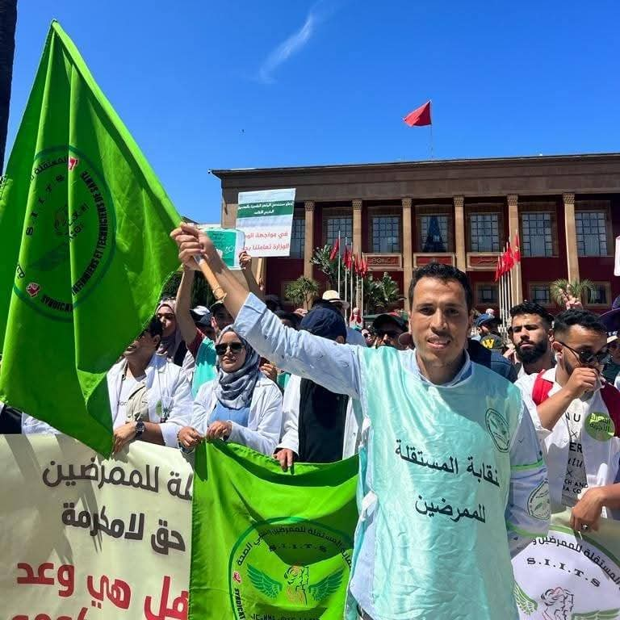

في علاقة الإدارة بالنقابة… مقال للأخ عبد اللطيف أهنوش

بقلم: عبد اللطيف أهنوش، عضو المكتب الوطني والكاتب الجهوي للنقابة بجهة بني ملال خنيفرة
العلاقة بين الإدارة والنقابة يسمّيها الكثير من الموظفين والكثير من المسؤولين علاقة شراكة، حيث نسمّي النقابة بالشريك الاجتماعي كلما أُريد تلميع شيء بنوع من المشاركة والتفاعل والاستماع والترافع... وهو أمر يمكن تقبّله لو كانت الوزارات والإدارات تعتبر النقابة فعلاً شريكاً حقيقياً وتُشركه في كل شيء...
لكن واقع الحال يقول إن النقابة عليها دائماً أن تذكّر بدورها في المشاركة والمشاورة وأن تُبدي الرغبة، إما عن طريق الاحتجاج أو التعبير... أما الوزارة فلا تبادر إلى استدعاء النقابات إلا لسببين لا ثالث لهما: إما أنها لمست أن القطاع يغلي وأن الاحتجاج قائم أو قادم، أي استدعاء تحت الضغط لإطفاء الغليان، أو استدعاء من أجل إضفاء الشرعية على قرارات أتتها من فوق ولا تعلم عنها شيئاً...
وهذه أمور كلها قد نغضّ عنها البصر إن اعتبرنا النقابة نقابةً لها أهداف، على رأسها الدفاع عن منخرطيها والفئات التي تمثلها، والوزارة وزارةً دورها المركزي السهر على توفير ظروف العمل للشغيلة الصحية لتقديم خدمات للمواطن الذي لا يحضر لطاولات الحوار... ولكن لكي نغضّ البصر عمّا سبق يجب أن نتساءل: ما الغاية من الحوار والاحتجاج والترافع والشراكة والتدافع؟ إنها الوصول إلى اتفاق يُلزم الجميع...
هذا الاتفاق يقودنا إلى أسئلة جوهرية: ما الذي يفرض على الوزارة الالتزام باتفاقاتها؟! بصيغة أخرى، ما الذي يضمن للنقابات أن الاتفاقات الموقّعة مُلزمة للطرف الإداري ما دام هو صاحب التوقيع وصاحب السلطة؟! وهل سبق للمركزيات النقابية أن ترافعت في مجلس المستشارين حول هذا الأمر، كونه مهماً ويحفظ للنقابة هيبتها وكرامتها؟
أطرح هذه الأسئلة لأنه، في ظل التماطل الذي تنهجه الوزارة في تنزيل التزاماتها، لم يعد هناك معنى للشراكة ولا للحوار، وعليها أن تعيد النظر في ذلك... كما علينا كفاعلين إعادة النظر في التعامل مع الوزارة...
أما مركزية المناصب المالية ومركزية الأجور، فجوابنا للسيد الوزير، ما دمت تطلّ علينا من باب الطمأنة، وما دام الأمر بالنسبة لكم لا مساس فيه وبالنسبة لنا غير مطمئن: فلتجد حلاً يُغنينا عن طمأنتك كل سنة.
الصورة من اتفاق 23 يوليوز 2024.
فتح في تطبيق النقابة